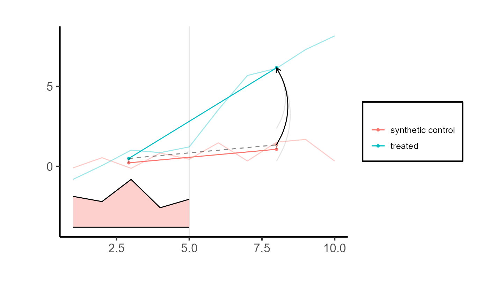
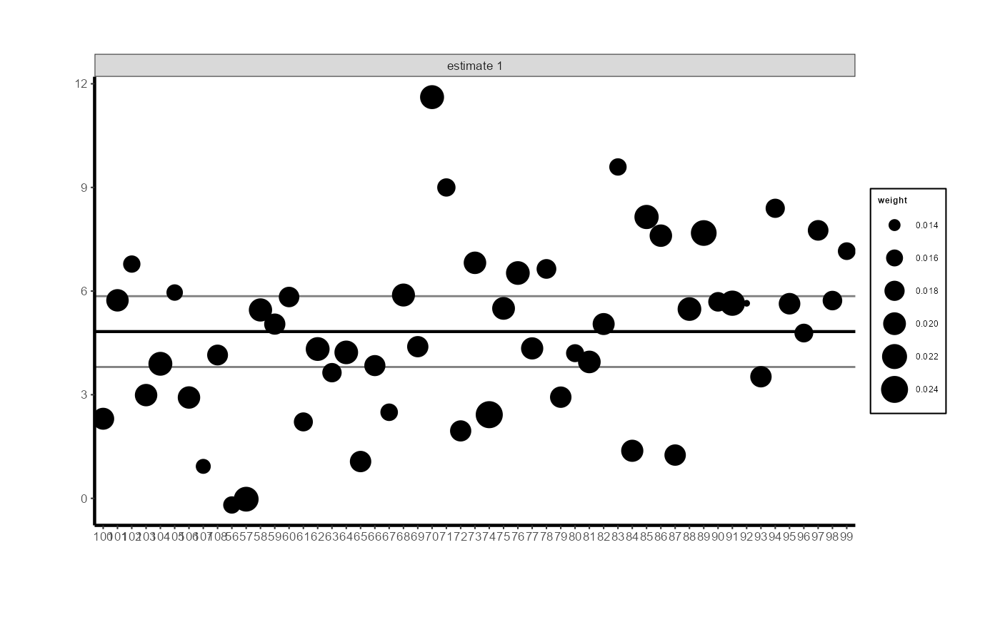
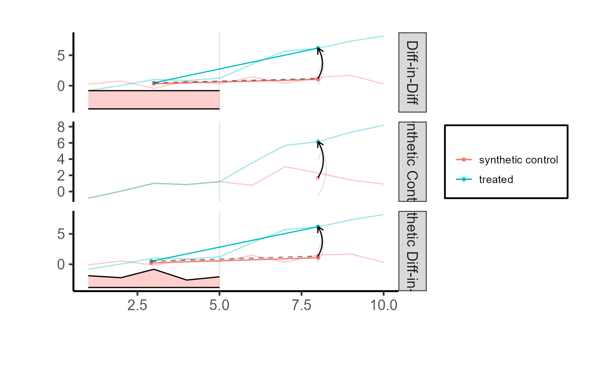
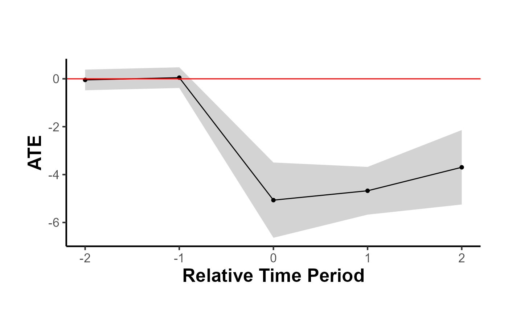
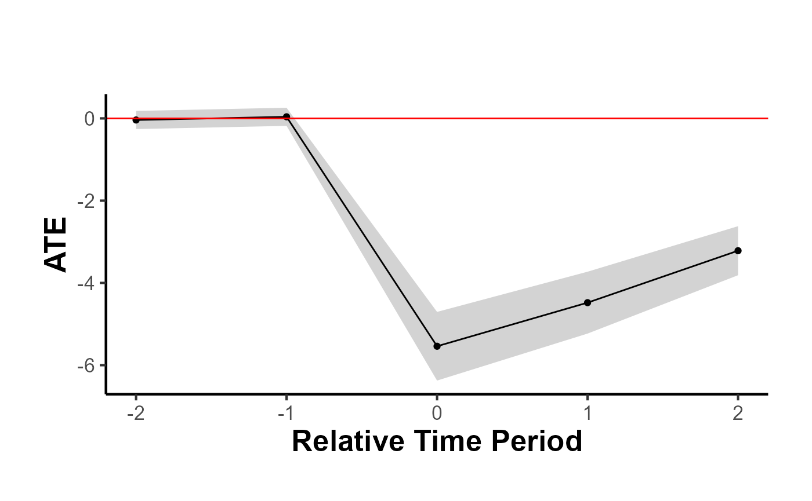

3. Synthetic Difference-in-Differences
Mike Nguyen
2024-03-10
b_synthdid.Rmd
library(causalverse)
knitr::opts_chunk$set(cache = TRUE)Synthetic DID
Block Adoption (Assignment)
This section contains the code from the synthdid package
(Arkhangelsky et al. 2021), which can
handle block adoption (i.e., when all units are treated at the same
time).
library(synthdid)
# Estimate the effect of California Proposition 99 on cigarette consumption
data('california_prop99')
setup = synthdid::panel.matrices(synthdid::california_prop99)
tau.hat = synthdid::synthdid_estimate(setup$Y, setup$N0, setup$T0)
print(summary(tau.hat))
#> $estimate
#> [1] -15.60383
#>
#> $se
#> [,1]
#> [1,] NA
#>
#> $controls
#> estimate 1
#> Nevada 0.124
#> New Hampshire 0.105
#> Connecticut 0.078
#> Delaware 0.070
#> Colorado 0.058
#> Illinois 0.053
#> Nebraska 0.048
#> Montana 0.045
#> Utah 0.042
#> New Mexico 0.041
#> Minnesota 0.039
#> Wisconsin 0.037
#> West Virginia 0.034
#> North Carolina 0.033
#> Idaho 0.031
#> Ohio 0.031
#> Maine 0.028
#> Iowa 0.026
#>
#> $periods
#> estimate 1
#> 1988 0.427
#> 1986 0.366
#> 1987 0.206
#>
#> $dimensions
#> N1 N0 N0.effective T1 T0 T0.effective
#> 1.000 38.000 16.388 12.000 19.000 2.783
# for only one treated unit, we can only use the placebo method
# se = sqrt(vcov(tau.hat, method='placebo'))
# sqrt(vcov(tau.hat, method='bootstrap'))
# sqrt(vcov(tau.hat, method='jackknife'))
# sprintf('point estimate: %1.2f', tau.hat)
# sprintf('95%% CI (%1.2f, %1.2f)', tau.hat - 1.96 * se, tau.hat + 1.96 * se)
plot(tau.hat) + ama_theme()Using fixest dataset
library(fixest)
library(tidyverse)
#> ── Attaching core tidyverse packages ──────────────────────── tidyverse 2.0.0 ──
#> ✔ dplyr 1.1.2 ✔ readr 2.1.4
#> ✔ forcats 1.0.0 ✔ stringr 1.5.1
#> ✔ lubridate 1.9.2 ✔ tibble 3.2.1
#> ✔ purrr 1.0.2 ✔ tidyr 1.3.0
#> ── Conflicts ────────────────────────────────────────── tidyverse_conflicts() ──
#> ✖ dplyr::filter() masks stats::filter()
#> ✖ dplyr::lag() masks stats::lag()
#> ℹ Use the conflicted package (<http://conflicted.r-lib.org/>) to force all conflicts to become errorsIf you want to use the base_stagg dataset, you have to
choose just 1 period, because function synthdid_estimate
cannot handle staggered adoption.
df <- base_stagg |>
filter(year_treated %in% c(10000, 8)) |>
transmute(
id = as.factor(id),
year = as.integer(year),
y = as.double(y),
treated = as.integer(if_else(time_to_treatment >= 0, 1, 0))
)
head(df)
setup = df |>
# specify column names
panel.matrices(
unit = "id",
time = "year",
outcome = "y",
treatment = "treated"
)
head(fixest::base_did)
#> y x1 id period post treat
#> 1 2.87530627 0.5365377 1 1 0 1
#> 2 1.86065272 -3.0431894 1 2 0 1
#> 3 0.09416524 5.5768439 1 3 0 1
#> 4 3.78147485 -2.8300587 1 4 0 1
#> 5 -2.55819959 -5.0443544 1 5 0 1
#> 6 1.72873240 -0.6363849 1 6 1 1
df = fixest::base_did |>
mutate(
id = as.factor(id),
period = as.integer(period),
y = as.double(y),
post = as.integer(post)
) |>
# correct treatment
mutate(treatment = as.integer(if_else(treat == 0, 0, post)))
setup <- df |>
synthdid::panel.matrices(
unit = "id",
time = "period",
outcome = "y",
treatment = "treatment"
)
tau.hat = synthdid::synthdid_estimate(setup$Y, setup$N0, setup$T0)
tau.hat
#> synthdid: 4.828 +- 1.025. Effective N0/N0 = 52.4/53~1.0. Effective T0/T0 = 4.6/5~0.9. N1,T1 = 55,5.
# sqrt(vcov(tau.hat, method='bootstrap'))
sqrt(vcov(tau.hat, method='jackknife'))
#> [,1]
#> [1,] 0.5228316
# to use this SE method, must have more controls than treated units
# can try the base_stagg dataset from above
# sqrt(vcov(tau.hat, method='placebo'))
# Comparing counterfactual estimate to real-world observation
synthdid::synthdid_plot(tau.hat
# , se.method = "placebo"
) + ama_theme()
# Control unit contribution plot (black is the ATE, grey lines are CIs)
synthdid::synthdid_units_plot(tau.hat) + ama_theme(base_size = 8)
# pre-treatment parallel trends
# synthdid::synthdid_plot(tau.hat, overlay = 1)
# synthdid::synthdid_plot(tau.hat, overlay = .8)
# synthdid::synthdid_placebo_plot(tau.hat)
# synthdid::synthdid_rmse_plot(tau.hat)To incorporate time-varying elements into the unit and time weights
of the synthdid, consider using residuals obtained from
regressing observed outcomes against time-varying variables. This can be
expressed as:
\[ Y_{it}^{res} = Y_{it} - X_{it} \hat{\beta} \]
where \(\hat{\beta}\) is derived from the regression equation \(Y = \beta X_{it}\).
setup2 <- df |>
dplyr::mutate(y_res = residuals(lm(y ~ x1))) |>
synthdid::panel.matrices(
unit = "id",
time = "period",
outcome = "y_res",
treatment = "treatment"
)
tau.hat2 = synthdid::synthdid_estimate(setup2$Y, setup2$N0, setup2$T0)
tau.hat2
#> synthdid: 4.850 +- 0.923. Effective N0/N0 = 52.5/53~1.0. Effective T0/T0 = 4.6/5~0.9. N1,T1 = 55,5.
tau.sc = synthdid::sc_estimate(setup$Y, setup$N0, setup$T0)
tau.did = synthdid::did_estimate(setup$Y, setup$N0, setup$T0)
estimates = list(tau.did, tau.sc, tau.hat)
names(estimates) = c('Diff-in-Diff', 'Synthetic Control', 'Synthetic Diff-in-Diff')
print(unlist(estimates))
#> Diff-in-Diff Synthetic Control Synthetic Diff-in-Diff
#> 4.993390 4.475815 4.827761
synthdid::synthdid_plot(estimates) +
ama_theme()
Spaghetti plots
top.controls = synthdid::synthdid_controls(tau.hat)[1:10, , drop=FALSE]
plot(tau.hat, spaghetti.units=rownames(top.controls)) + ama_theme()
synthdid::synthdid_units_plot(estimates) +
ama_theme()
synthdid::synthdid_units_plot(tau.hat, units = rownames(top.controls)) + ama_theme()Compare to other estimators
setup = synthdid::panel.matrices(synthdid::california_prop99)
# Run for specific estimators
results_selected = causalverse::panel_estimate(setup, selected_estimators = c("synthdid", "did", "sc"))
results_selected
#> $synthdid
#> $synthdid$estimate
#> synthdid: -15.604 +- NA. Effective N0/N0 = 16.4/38~0.4. Effective T0/T0 = 2.8/19~0.1. N1,T1 = 1,12.
#>
#> $synthdid$std.error
#> [1] 10.05324
#>
#>
#> $did
#> $did$estimate
#> synthdid: -27.349 +- NA. Effective N0/N0 = 38.0/38~1.0. Effective T0/T0 = 19.0/19~1.0. N1,T1 = 1,12.
#>
#> $did$std.error
#> [1] 15.81479
#>
#>
#> $sc
#> $sc$estimate
#> synthdid: -19.620 +- NA. Effective N0/N0 = 3.8/38~0.1. Effective T0/T0 = Inf/19~Inf. N1,T1 = 1,12.
#>
#> $sc$std.error
#> [1] 11.16422
# to access more details in the estimate object
summary(results_selected$did$estimate)
#> $estimate
#> [1] -27.34911
#>
#> $se
#> [,1]
#> [1,] NA
#>
#> $controls
#> estimate 1
#> Wyoming 0.026
#> Wisconsin 0.026
#> West Virginia 0.026
#> Virginia 0.026
#> Vermont 0.026
#> Utah 0.026
#> Texas 0.026
#> Tennessee 0.026
#> South Dakota 0.026
#> South Carolina 0.026
#> Rhode Island 0.026
#> Pennsylvania 0.026
#> Oklahoma 0.026
#> Ohio 0.026
#> North Dakota 0.026
#> North Carolina 0.026
#> New Mexico 0.026
#> New Hampshire 0.026
#> Nevada 0.026
#> Nebraska 0.026
#> Montana 0.026
#> Missouri 0.026
#> Mississippi 0.026
#> Minnesota 0.026
#> Maine 0.026
#> Louisiana 0.026
#> Kentucky 0.026
#> Kansas 0.026
#> Iowa 0.026
#> Indiana 0.026
#> Illinois 0.026
#> Idaho 0.026
#> Georgia 0.026
#> Delaware 0.026
#> Connecticut 0.026
#>
#> $periods
#> estimate 1
#> 1988 0.053
#> 1987 0.053
#> 1986 0.053
#> 1985 0.053
#> 1984 0.053
#> 1983 0.053
#> 1982 0.053
#> 1981 0.053
#> 1980 0.053
#> 1979 0.053
#> 1978 0.053
#> 1977 0.053
#> 1976 0.053
#> 1975 0.053
#> 1974 0.053
#> 1973 0.053
#> 1972 0.053
#> 1971 0.053
#>
#> $dimensions
#> N1 N0 N0.effective T1 T0 T0.effective
#> 1 38 38 12 19 19
process_panel_estimate(results_selected)
#> Method Estimate SE
#> 1 SYNTHDID -15.60 10.05
#> 2 DID -27.35 15.81
#> 3 SC -19.62 11.16Staggered Adoptions
This vignette adapts the block assignment method from Arkhangelsky et al. (2021) for staggered
adoption scenarios. Following the approach suggested by Ben-Michael, Feller, and Rothstein (2022),
separate assignment matrices are created for each treatment period to
fit the block assignment context. The synthdid estimator is
then applied to each sub-sample. Finally, the Average Treatment Effect
on the Treated (ATT) is calculated as a weighted average of all ATTs for
all treated periods, with weights based on the proportion of treated
units in each time period for each sub-sample.
library(tidyverse)
library(fixest)
df <- fixest::base_stagg |>
dplyr::mutate(treatvar = if_else(time_to_treatment >= 0, 1, 0)) |>
dplyr::mutate(treatvar = as.integer(if_else(year_treated > (5 + 2), 0, treatvar)))
est <- causalverse::synthdid_est_ate(
data = df,
adoption_cohorts = 5:7,
lags = 2,
leads = 2,
time_var = "year",
unit_id_var = "id",
treated_period_var = "year_treated",
treat_stat_var = "treatvar",
outcome_var = "y",
)
#> Adoption Cohort: 5
#> Treated units: 5 Control units: 65
#> Adoption Cohort: 6
#> Treated units: 5 Control units: 60
#> Adoption Cohort: 7
#> Treated units: 5 Control units: 55
data.frame(
Period = names(est$TE_mean_w),
ATE = est$TE_mean_w,
SE = est$SE_mean_w
) |>
causalverse::nice_tab()
#> Period ATE SE
#> 1 -2 -0.05 0.22
#> 2 -1 0.05 0.22
#> 3 0 -5.07 0.80
#> 4 1 -4.68 0.51
#> 5 2 -3.70 0.79
#> 6 cumul.0 -5.07 0.80
#> 7 cumul.1 -4.87 0.55
#> 8 cumul.2 -4.48 0.53
causalverse::synthdid_plot_ate(est)
Compare to different estimators (e.g., DID and SC)
methods <- c("synthdid", "did", "sc", "sc_ridge", "difp", "difp_ridge")
estimates <- lapply(methods, function(method) {
synthdid_est_ate(
data = df,
adoption_cohorts = 5:7,
lags = 2,
leads = 2,
time_var = "year",
unit_id_var = "id",
treated_period_var = "year_treated",
treat_stat_var = "treatvar",
outcome_var = "y",
method = method
)
})
plots <- lapply(seq_along(estimates), function(i) {
causalverse::synthdid_plot_ate(estimates[[i]],
title = methods[i],
theme = causalverse::ama_theme(base_size = 6))
})
gridExtra::grid.arrange(grobs = plots, ncol = 2)Subgroup Analysis (i.e., exploring treatment effects heterogeneity)
library(tidyverse)
est_sub <- causalverse::synthdid_est_ate(
data = df,
adoption_cohorts = 5:7,
lags = 2,
leads = 2,
time_var = "year",
unit_id_var = "id",
treated_period_var = "year_treated",
treat_stat_var = "treatvar",
outcome_var = "y",
# a vector of subgroup id (from unit id)
subgroup = c(
# some are treated
"11", "30", "49" ,
# some are control within this period
"20", "25", "21")
)
#> adoption_cohort: 5
#> Treated units: 3 Control units: 65
#> adoption_cohort: 6
#> Treated units: 0 Control units: 60
#> adoption_cohort: 7
#> Treated units: 0 Control units: 55
data.frame(
Period = names(est_sub$TE_mean_w),
ATE = est_sub$TE_mean_w,
SE = est_sub$SE_mean_w
) |>
causalverse::nice_tab()
#> Period ATE SE
#> 1 -2 0.32 0.44
#> 2 -1 -0.32 0.44
#> 3 0 -4.29 1.68
#> 4 1 -4.00 1.52
#> 5 2 -3.44 2.90
#> 6 cumul.0 -4.29 1.68
#> 7 cumul.1 -4.14 1.52
#> 8 cumul.2 -3.91 1.82
causalverse::synthdid_plot_ate(est)
To incorporate time-varying variables, use the residuals obtained from regressing the outcome on these variables.
df_x <- fixest::base_stagg |>
dplyr::mutate(treatvar = if_else(time_to_treatment >= 0, 1, 0)) |>
dplyr::mutate(treatvar = as.integer(if_else(year_treated > (5 + 2), 0, treatvar))) |>
mutate(y_res = residuals(lm(y ~ x1)))
est_x <- causalverse::synthdid_est_ate(
data = df_x,
adoption_cohorts = 5:7,
lags = 2,
leads = 2,
time_var = "year",
unit_id_var = "id",
treated_period_var = "year_treated",
treat_stat_var = "treatvar",
outcome_var = "y_res"
)
#> adoption_cohort: 5
#> Treated units: 5 Control units: 65
#> adoption_cohort: 6
#> Treated units: 5 Control units: 60
#> adoption_cohort: 7
#> Treated units: 5 Control units: 55
data.frame(
Period = names(est_x$TE_mean_w),
ATE = est_x$TE_mean_w,
SE = est_x$SE_mean_w
) |>
causalverse::nice_tab()
#> Period ATE SE
#> 1 -2 -0.04 0.11
#> 2 -1 0.04 0.11
#> 3 0 -5.54 0.43
#> 4 1 -4.48 0.38
#> 5 2 -3.22 0.30
#> 6 cumul.0 -5.54 0.43
#> 7 cumul.1 -5.01 0.36
#> 8 cumul.2 -4.41 0.29
causalverse::synthdid_plot_ate(est_x)